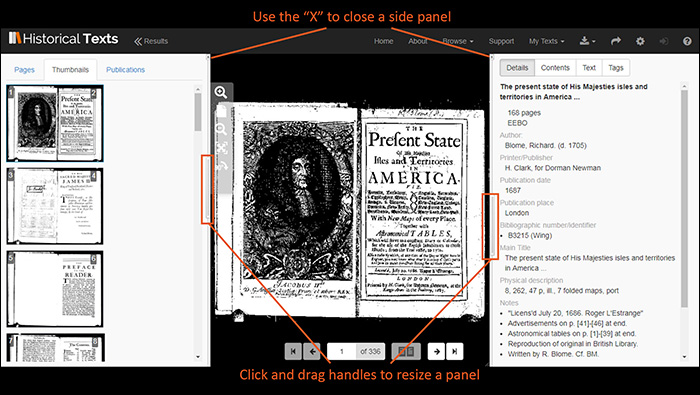
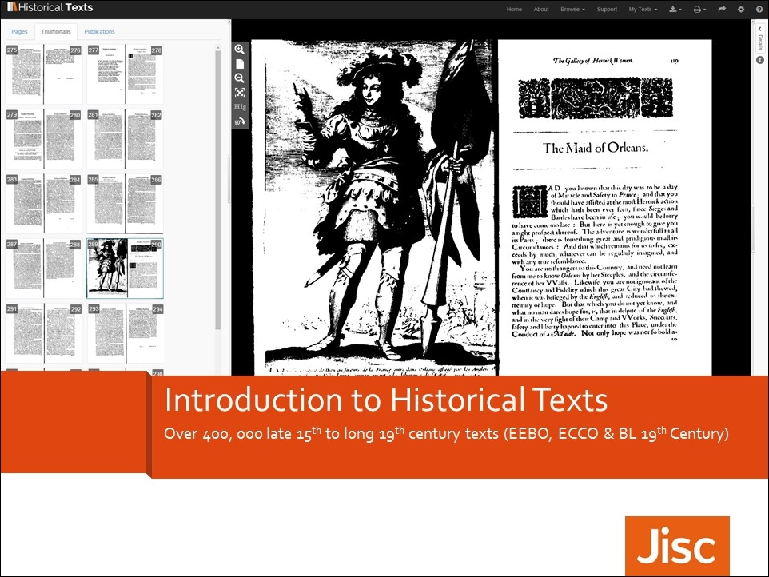

<div class="row">
    <div class="col-xs-12 topSpace">
        <div class="sideMenu">
            <div class="title">Support</div>
            <ul>
                <li class="selected"><a href="">Support Home</a>
				
						 <ul>
            <li><a href="/support#introvideo">Introductory Video</a></li>
			<li><a href="/support#viewervideo">Introduction to the Viewer Video</a></li>
			<li><a href="/support#diffvideo">Differences Between the Collections Video</a></li>
			<li><a href="/support#advanvideo">Using the Advanced Search Video</a></li>
		    <li><a href="/support#personvideo">Using the Personalisation Features Video</a></li>
		    <li><a href="/support#filtervideo">Filtering Search Results Video</a></li>
			<li><a href="/support#HTipad">Using Historical Texts on an iPad</a></li>				 
            <li><a href="/support#webinar">Webinar</a></li>
			<li><a href="/support#quickref">Quick Reference Guide</a></li>
            <li><a href="/support#introppt">Introduction to Historical Texts Presentation</a></li>
            <li><a href="/support#transition">Transition guides from EEBO or ECCO to Historical Texts</a></li>
            <!--<li><a href="/support#mobile">Mobile Friendly Interface</a></li>-->
            </ul>
			</li>
				
				
                <li><a href="/help/">Help File</a></li>
                <li><a href="/librarians/">Librarians</a></li>
                <li><a href="/faq/">FAQ</a></li>
                <li><a href="/quickref/">Quick Reference Guide</a></li>
				<li><a href="/features/">Features</a></li>
			</ul>
        </div>

        <div class="support">

            <ol class="breadcrumb">
                <li class="active">Support Home</li>

            </ol>

            <h1>Support materials</h1>

            <h2 id="introvideo">Introductory video</h2>
            
			<p>For a quick tour of the key features available please watch our short introductory video&#58;</p>

            <iframe title="Introduction to Historical Texts Youtube video" width="640" height="360" src="//www.youtube.com/embed/FOnHiyuEetM?rel=0&vq=hd720" frameborder="0" allowfullscreen></iframe>
			
			<h2 id="viewervideo">Introduction to the Viewer Video</h2>
            
			<p>This video is intended to help users of Historical Texts make the most of the Viewer&#58;</p>

            <iframe title="Historical Texts viewer Youtube video" width="640" height="360" src="//www.youtube.com/embed/NZBV0Aty-Co?rel=0&vq=hd720" frameborder="0" allowfullscreen></iframe>
			
	        <h2 id="diffvideo">Differences Between the Collections Video</h2>		
		
			<p>To find how the collections in Historical Texts differ, we&#39;ve made the following video&#58;</p>

            <iframe title="How the collections differ in Historical Texts Youtube video" width="640" height="360" src="//www.youtube.com/embed/-waNiyP6jmo?rel=0&vq=hd720" frameborder="0" allowfullscreen></iframe>
			
			<h2 id="advanvideo">Using the Advanced Search Video</h2>
			
			<p>This video shows researchers how to get the most out of the Advanced Search features&#58;</p>

            <iframe title="Using advanced search features in Historical Texts Youtube video" width="640" height="360" src="//www.youtube.com/embed/E20y4Mu5iHI?rel=0&vq=hd720" frameborder="0" allowfullscreen></iframe>
						
		    <h2 id="personvideo">Using the Personalisation Features Video</h2>
			
			<p>This video introduces researchers to the Personalisation features available in Historical Texts&#58;</p>

            <iframe title="Using peronalisation features on Historical Texts Youtube video" width="640" height="360" src="//www.youtube.com/embed/b37RxPEvtXU?rel=0&vq=hd720" frameborder="0" allowfullscreen></iframe>
			
			<h2 id="filtervideo">Filtering Search Results Video</h2>
			
			<p>This video shows researchers how to filter down the results of their searches for further refinement&#58;</p>

            <iframe title="filtering search results Youtube video" width="640" height="360" src="//www.youtube.com/embed/t_UcwhEKm1g?rel=0&vq=hd720" frameborder="0" allowfullscreen></iframe>
			
			<h2 id="HTipad">Using Historical Texts on an iPad Video</h2>
			
			<p>This video demonstrates some of the features that work on a tablet. There is no audio on this video so there are no closed captions. We have created an audio description playlist in the <a href="https://www.youtube.com/playlist?list=PL8kskU4yOYfJCFZRHz5tFp_AOZ8P__X2T" title="Historical Texts audio description playlist">Historical Texts Youtube channel</a>. We have added an <a href="https://youtu.be/OHdYifAcwNc" title="Link to audio description HT on ipad video on Youtube" target="_self">audio description version of the Using Historical Texts video</a>.</p>

            <iframe title="Using Historical Texts on an ipad" width="640" height="360" src="https://www.youtube.com/embed/RlRMxbuggR0" frameborder="0" allow="accelerometer; encrypted-media; gyroscope; picture-in-picture" allowfullscreen></iframe>
			
			<h2 id="webinar">Webinar</h2>
			
			<p>We recently presented a webinar, &ldquo;Historical Texts&#58; service overview and new features&rdquo; on 28 June 2017&#58;</p>
			<p>The video recording and presenter slides for this webinar can be found at our Events page, <a href="/events/">here</a></p>
			
            <h2 id="quickref">Quick Reference Guide</h2>


			<p>To help you get started using Historical Texts you can view our <a href="/quickref/" title="Quick Reference Guide"><b>Quick Reference Guide page.</b></a>

				<br> 

				We&#39;ve also made a version in the PDF format, that you can download for offline working should you wish&#58; <a href="../../../files/HT-QRG2018.pdf" target="_self" title="Historical Texts Quick Reference Guide PDF"><b> Quick Reference Guide &#40;offline version&#41;</b></a> 	&#40;PDF, 1953KB&#41;.</p>


			


			<h2 id="introppt">Introduction to Historical Texts presentation</h2>


			<p>An introduction to Historical Texts presentation is available as a <a href="http://historicaltexts.jisc.ac.uk/files/Introduction-to-Historical-Texts-May-2018.pptx" target="_self" title="Cover image for the Introduction to Historical Texts Presentation"><b> PPT &#40;8.1MB&#41;</b></a> or a <a href="http://historicaltexts.jisc.ac.uk/files/Introduction-to-Historical-Texts-May-2018.pdf" target="_self" title="Introduction to Historical Texts presentation PDF"><b> PDF &#40;4MB&#41;</b></a> .</p>


			


			<h2 id="transition">Transition guides from EEBO or ECCO to Historical Texts</h2>
            
			<p>We understand that using a new platform for accessing EEBO and ECCO can take a bit of time to adjust to. For those of you who&#39;ve used EEBO and ECCO via the content providers platforms previously, we've created a couple of short guides to assist you in locating the features you're familiar with.</p>
            <ul>
            <li><a href="http://historicaltexts.jisc.ac.uk/files/EEBO-to-HT-Transition-Guide.pdf" target="_self" title="Transition from EEBO to Historical Texts user guide">Transition from EEBO to Historical Texts user guide</a> &#40;PDF, 301KB&#41;</li>
            <li><a href="http://historicaltexts.jisc.ac.uk/files/ECCO-to-HT-Transition-Guide.pdf" target="_self" title="Transition from ECCO to Historical Texts user guide">Transition from ECCO to Historical Texts user guide</a> &#40;PDF, 218KB&#41;</li>
            </ul>
            
            <!--<hr />
            
            <h2 id="mobile">Mobile friendly interface &#40;in development&#41;</h2>
            <p>We&#39;re keen to ensure researchers can use Historical Texts from whatever device they choose, be it a desktop, laptop, tablet or mobile phone. Rather than creating a separate app for mobile devices we're making the interface responsive, so it will resize according to the device you are accessing it from.</p>
            <p>There are two stages to this process&#58; firstly to make the search and results screen mobile friendly, then secondly to make the viewer mobile friendly.</p>
			<p>The first stage is complete and we released the mobile friendly search and results screen in March 2015. For a quick demonstration of how this looks on a tablet and a mobile phone please see the short videos below.</p>
            <p>Tablet demo&#58;</p>
            
    	<iframe width="420" height="315" src="https://www.youtube.com/embed/-2JA4OOlJvA?rel=0&vq=hd720" frameborder="0" allowfullscreen></iframe>
            
            <p>Phone demo&#58;</p>
    
    	<iframe width="420" height="315" src="https://www.youtube.com/embed/ON43UuJ7gxU?rel=0&vq=hd720" frameborder="0" allowfullscreen></iframe>-->
		</div>
        </div>
    </div>